融合数据统计分析、传统机器学习预测与大模型语义分析三大模块， 对中国电影的市场热度与口碑进行多维度预判与解读。
电影产业是文化消费的重要组成部分，一部电影的市场表现（票房、口碑）受到多重因素影响： 上映档期、前期宣传热度、影片内容质量与时长等。对片方和发行方而言，如果能在上映前就对一部电影的 市场反响做出预判，便能更科学地安排排片计划、宣发预算和档期选择。
数据通过自建爬虫从豆瓣采集，覆盖 27 个类型，
经清洗、去重、关联百度指数后形成最终数据集 china_all.xlsx。
| 指标 | 均值 | 中位数 | 标准差 |
|---|---|---|---|
| 豆瓣评分 | 6.27 | 6.50 | 1.51 |
| 评价人数 | 52,925 | 4,637 | 156,444 |
| 百度指数 | 8,799 | 2,264 | — |
百度指数基于 6,950 条有效记录统计。
均值是中位数的 11 倍， 说明少数爆款电影占据了绝大部分关注度。这正是建模时必须对目标变量做 log1p 对数变换的根本原因——否则几部百万级爆款会主导整个损失函数。
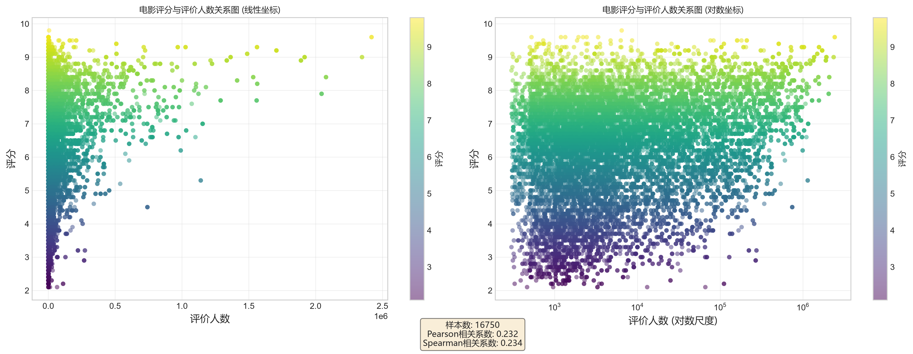
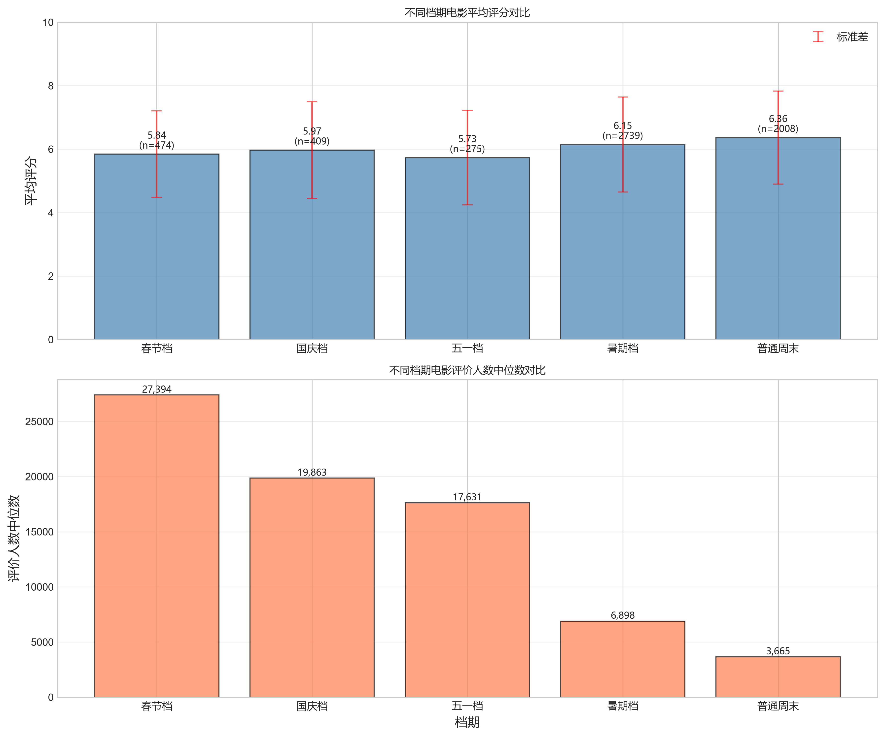
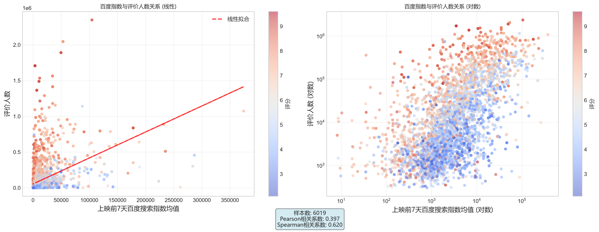
线性回归（基线）：假设线性关系，可解释性强， 用于验证问题是否存在简单线性结构。
随机森林（主力）：100 棵决策树集成， 能捕捉非线性关系与特征交互，对异常值更鲁棒。
| 模型 | RMSE ↓ | MAE ↓ | R² ↑ | MAPE ↓ |
|---|---|---|---|---|
| 线性回归 | 2,919,466 | 220,925 | -209.6 | 386.7% |
| 随机森林 | 141,093 | 48,554 | 0.508 | 116.3% |
线性回归 R² 为负，说明它完全无法处理长尾分布与非线性关系； 随机森林能解释约一半方差，在噪声极大的电影市场已属可用水平。
| 模型 | RMSE ↓ | MAE ↓ | R² ↑ | MAPE ↓ |
|---|---|---|---|---|
| 线性回归 | 1.31 | 1.04 | 0.290 | 21.3% |
| 随机森林 | 1.04 | 0.80 | 0.549 | 16.7% |
随机森林 MAPE 仅 16.7%（平均误差约 1 分）。评分更多取决于剧本、演技等 难以量化的内容因素，仅靠客观元数据存在预测天花板——这正是引入大模型做内容分析的价值所在。
增加百度衍生统计量 + 类型 one-hot 编码后，随机森林评价人数预测 CV R² 翻倍
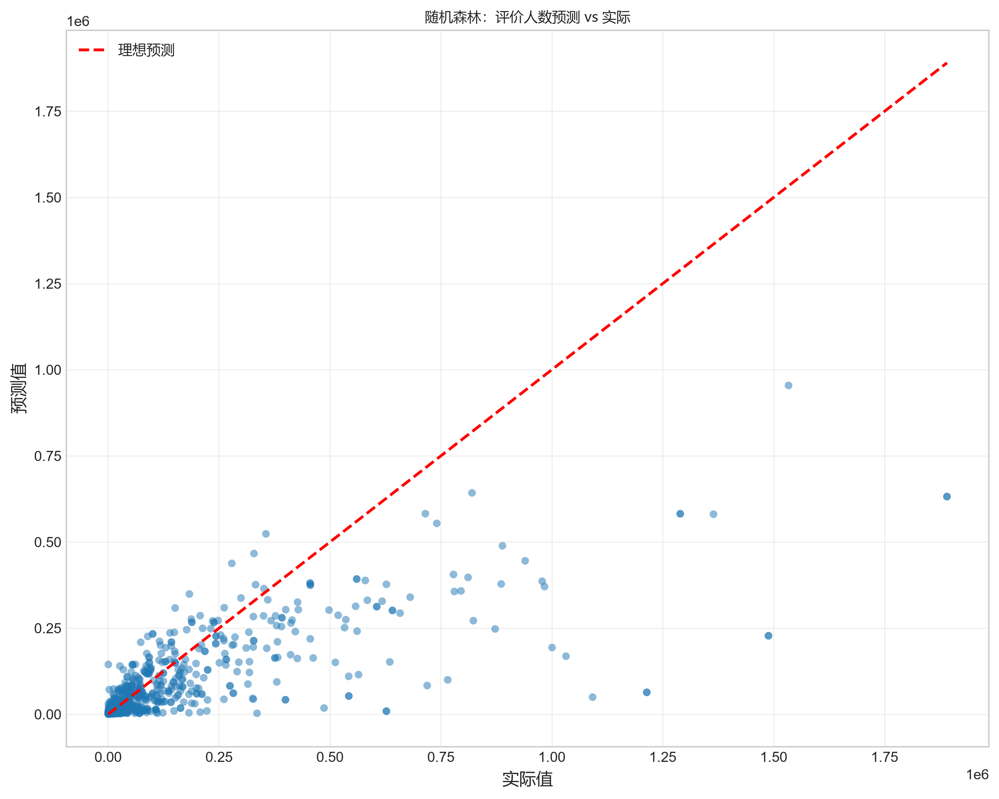
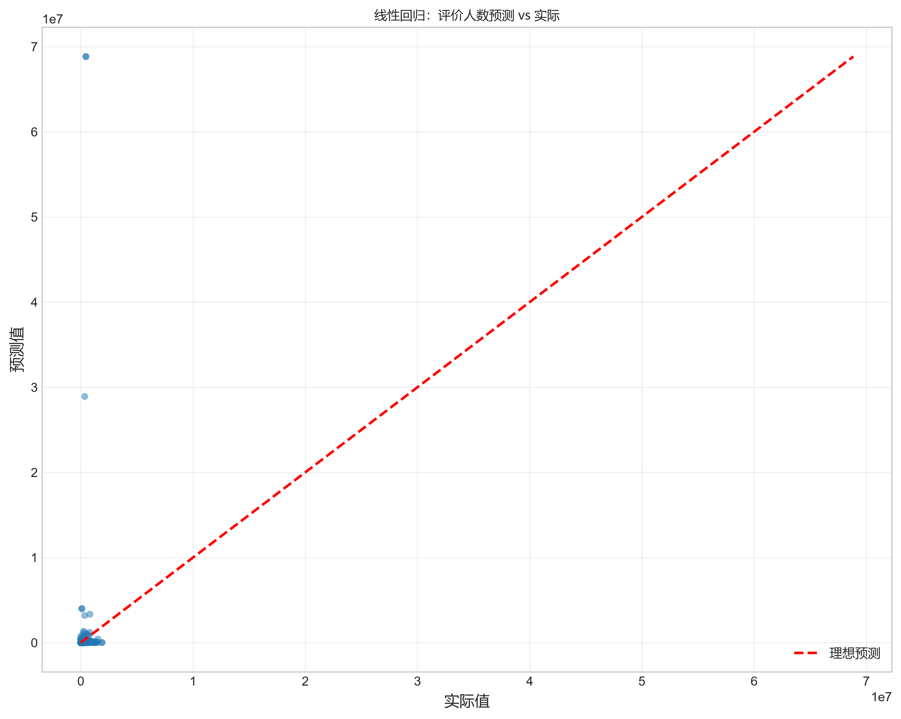
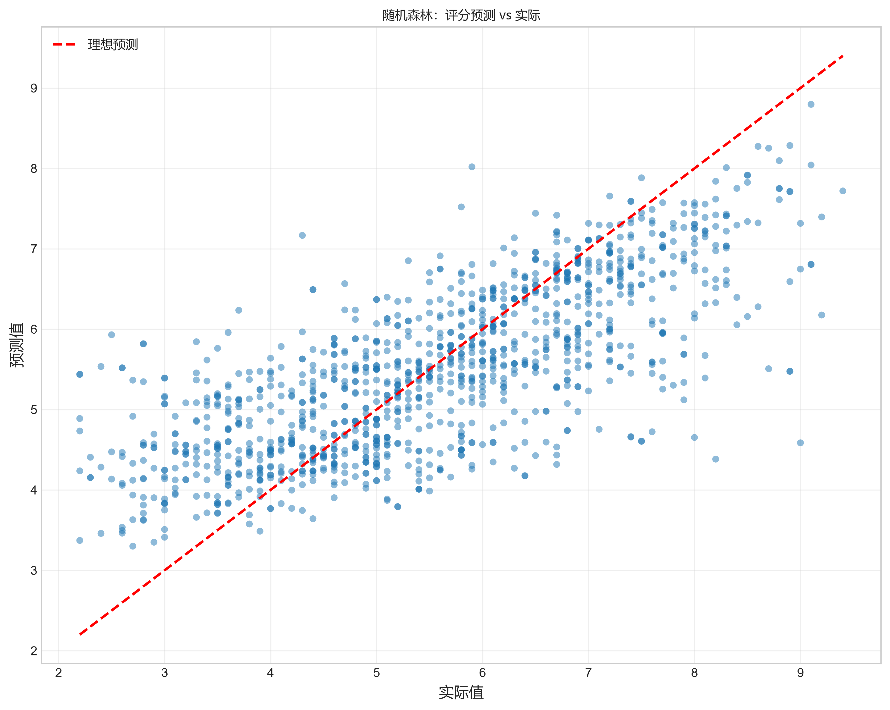
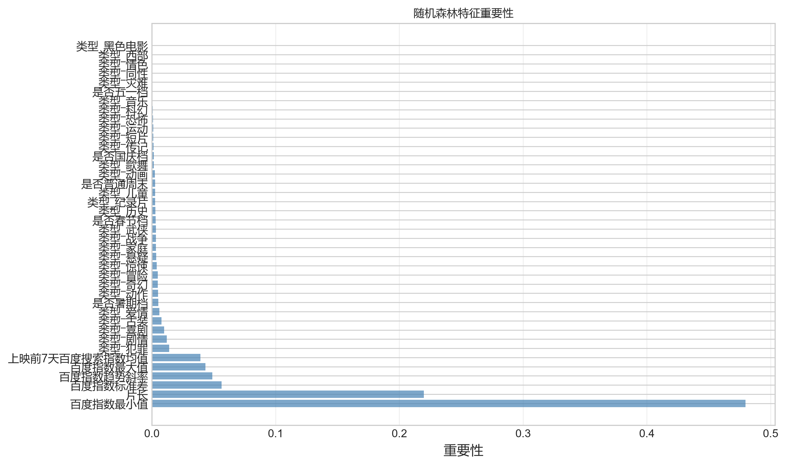
传统类型标签（动作、爱情）较粗糙，无法刻画"催泪""合家欢""沉重压抑"这类贴近观众情感体验的特征。 调用 DeepSeek（deepseek-v4-flash） 对剧情简介做语义分析， 自动打上细粒度标签，填补传统特征工程的空白。
情感类
风格类
主题类
节奏类
System Prompt
User Prompt
高频标签（Top 6，基于真实数据）
来源：tag_statistics.csv，共 14,929 部电影完整标注
| 档期 | 电影数 | Top 1 | Top 2 | Top 3 |
|---|---|---|---|---|
| 春节档 | 426 | 喜剧(181) | 动作(138) | 奇幻(113) |
| 国庆档 | 352 | 动作(125) | 奇幻(80) | 悬疑(70) |
| 五一档 | 231 | 动作(69) | 悬疑(61) | 犯罪(51) |
| 暑期档 | 2,438 | 动作(861) | 喜剧(561) | 悬疑(547) |
| 普通周末 | 1,756 | 动作(535) | 犯罪(396) | 喜剧(395) |
核心发现：春节档"喜剧"高居 Top1（181/426部，占比 42.5%）， 而普通周末 Top1 是"动作"、Top2 是"犯罪"——大模型分析在数据层面量化验证了 "春节档需要合家欢喜剧氛围"的市场直觉。此外同为"犯罪"题材，大模型进一步细分出 "沉重压抑"的写实派与"紧张刺激"的商业派，精度远超传统类型标签。
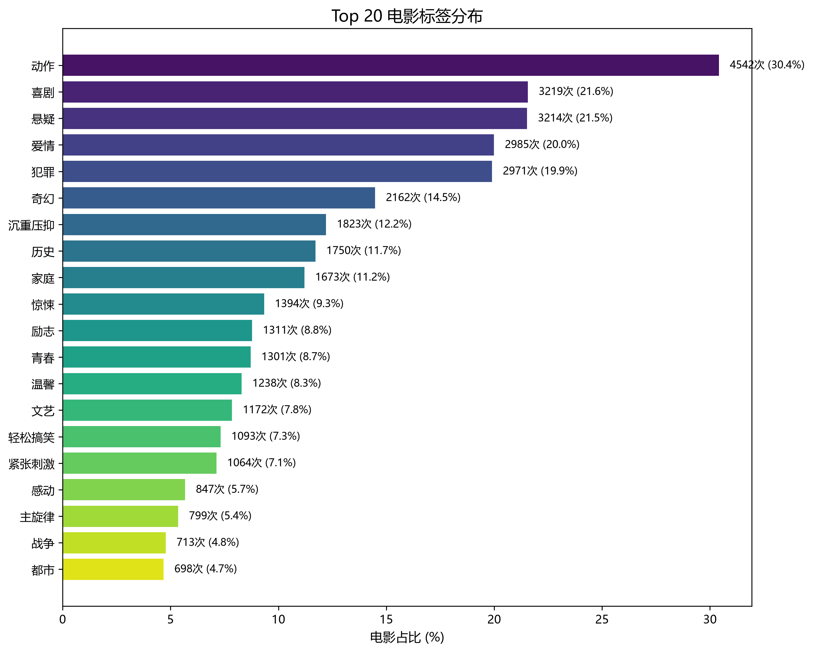
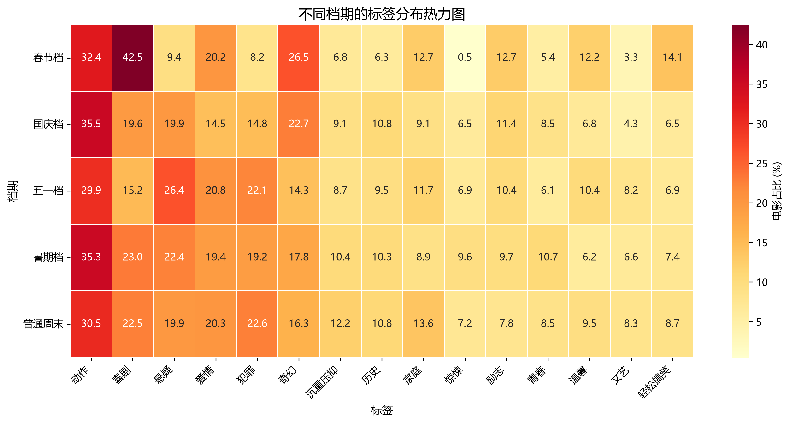
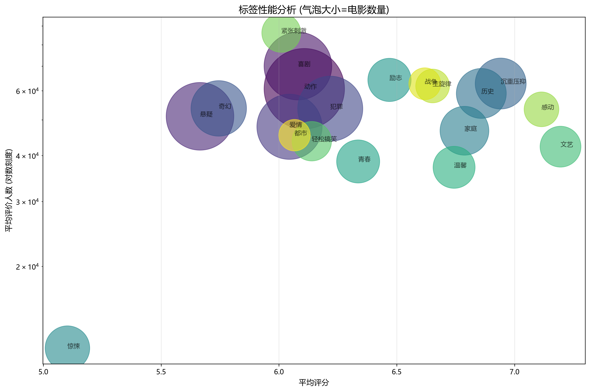
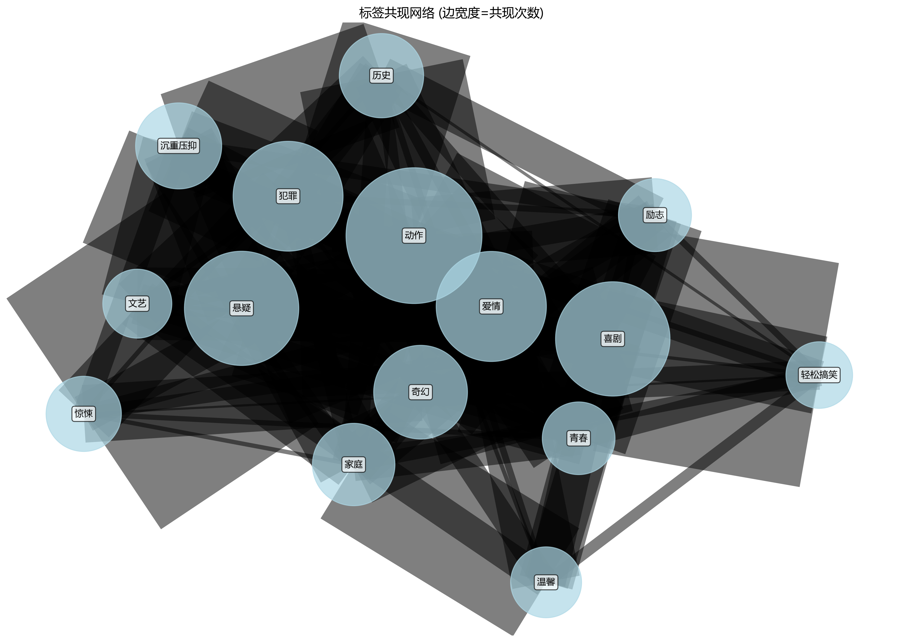
df[col].fillna(inplace=True) 作用在临时副本被丢弃，改赋值写法解决。| 维度 | 传统机器学习（随机森林） | 大模型（DeepSeek） |
|---|---|---|
| 输入数据 | 结构化数值/类别特征 | 非结构化自然语言文本 |
| 核心优势 | 可量化评估、特征可解释 | 理解语义、处理语言 |
| 主要局限 | 无法理解内容含义 | 成本高、不可量化评估 |
| 可解释性 | 强（特征重要性） | 弱（黑盒） |
| 边际成本 | 训练后接近零 | 按调用量持续付费 |
| 本项目作用 | 预测热度/评分 | 挖掘情感标签 |
两者不是替代而是互补关系：传统模型回答"这部电影会有多火"， 大模型回答"这部电影是什么情绪基调"，二者结合才构成完整的决策支持系统。 选择正确的工具，比调参更重要。
通过这次大作业，我完整走了一遍"数据采集 → 清洗 → 探索性分析 → 特征工程 → 建模预测 → 大模型智能分析"的 数据科学全流程。最大的收获是：遇到报错不能慌，要静下心定位根因——很多看似玄学的 bug， 背后都有清晰的技术原因，搞明白一个真正的根因，比盲目试错十次都有价值。